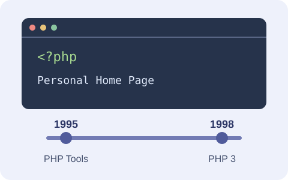
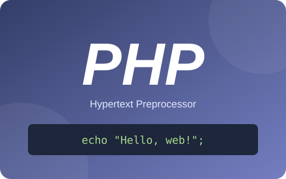
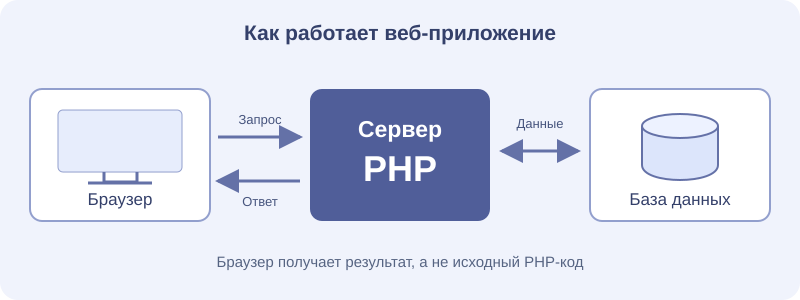

1. История создания

История PHP началась в , когда программист Расмус Лердорф создал набор инструментов для своей персональной веб-страницы. Они помогали учитывать посещения его онлайн-резюме. Развивая эти инструменты, Лердорф реализовал их на языке C и добавил возможности работы с формами и базами данных.
исходный код PHP Tools был опубликован. Название PHP первоначально связывалось с выражением Personal Home Page — «персональная домашняя страница». Публикация позволила другим разработчикам использовать инструменты, исправлять ошибки и предлагать улучшения.
Важным этапом стала работа Энди Гутманса и Зеева Сураски. В 1997 году они начали переработку анализатора языка. Результатом сотрудничества с Лердорфом стала версия PHP 3, выпущенная в 1998 году. Название стало рекурсивным сокращением: PHP: Hypertext Preprocessor.
В PHP 4 появился Zend Engine, а PHP 5
значительно расширил объектную модель. PHP 7 повысил
производительность и развил средства типизации. В PHP 8
появились объединения типов, выражение match,
именованные аргументы и другие возможности.
Основные этапы развития
| Год | Версия | Основные изменения |
|---|---|---|
| 1995 | PHP Tools | Публичное распространение исходного кода инструментов. |
| 1998 | PHP 3 | Переработка языка, расширяемость, новое значение названия. |
| 2000 | PHP 4 | Использование Zend Engine. |
| 2004 | PHP 5 | Новая объектная модель и Zend Engine II. |
| 2015 | PHP 7 | Рост производительности, скалярные типы и типы возврата. |
| 2020 | PHP 8 | JIT, атрибуты, union types, match, именованные аргументы. |
«PHP (рекурсивный акроним словосочетания PHP: Hypertext Preprocessor) — это распространённый язык программирования общего назначения с открытым исходным кодом».
Руководство PHP: «Что такое PHP?»
2. Краткий обзор языка

PHP — язык общего назначения, особенно подходящий для веб-разработки. Обычно программа выполняется на сервере, а браузер получает её результат: например, HTML-страницу или данные в формате JSON. Исходный PHP-код при корректной настройке сервера пользователю не передаётся.
Для PHP характерна динамическая типизация:
тип значения переменной может меняться во время выполнения.
При этом язык поддерживает объявления типов параметров,
возвращаемых значений и свойств. Режим
strict_types ужесточает правила для скалярных
аргументов и возвращаемых значений, но
не превращает PHP в статически типизированный язык.
Синтаксис PHP имеет общие черты с C: используются фигурные
скобки, круглые скобки в условиях и точка с запятой.
Имена переменных начинаются со знака $.
Язык поддерживает процедурный и объектно-ориентированный
подходы, а также функции как значения и замыкания.
Где применяется PHP
- Создание динамических сайтов и веб-приложений.
- Обработка форм, управление сессиями и авторизацией.
- Разработка серверных API и работа с базами данных.
- Написание консольных утилит и фоновых задач.
Характерные возможности
- Встраивание PHP-кода непосредственно в HTML-документ.
- Поддержка классов, интерфейсов, трейтов и пространств имён.
- Работа с зависимостями через менеджер пакетов Composer.
- Большая экосистема, включая Laravel, Symfony и WordPress.

Как обрабатывается запрос
- Браузер отправляет HTTP-запрос веб-серверу.
- Веб-сервер передаёт выполнение обработчику PHP.
- Программа выполняет вычисления и при необходимости запросы к БД.
- Сервер возвращает сформированный HTTP-ответ браузеру.
- Интерпретатор
- Среда выполнения PHP: исходный код компилируется во внутренние инструкции, которые выполняет движок.
- Composer
- Менеджер зависимостей для установки библиотек PHP.
- PHP-FPM
- Менеджер процессов FastCGI, часто применяемый для выполнения PHP за веб-сервером.
3. Примеры кода
Примеры рассчитаны на PHP 8.0 и новее. Подсветка выполнена средствами HTML и CSS: ключевые слова, строки, переменные и комментарии имеют разные цвета.
Пример 1. Функция и типы
Функция greet() принимает имя и возвращает строку.
Переменная $name обозначает переданный аргумент.
<?php
declare(strict_types=1);
// Объявления типов параметра и результата.
function greet(string $name): string
{
return "Привет, " . $name . "!";
}
echo greet("Анна");Результат: Привет, Анна!
Как запустить пример?
Установите PHP, сохраните код в файле hello.php
и выполните в терминале команду php hello.php.
Завершающий тег ?> в файле, содержащем только
PHP-код, обычно опускают, чтобы избежать случайного вывода
пробелов после него.
Пример 2. Массив и цикл
Массив хранит названия технологий, а цикл
foreach последовательно перебирает его элементы.
<?php
$languages = [
"PHP",
"JavaScript",
"Python",
];
foreach ($languages as $language) {
echo $language . "\n";
}Результат в терминале:
PHP JavaScript Python
Пример 3. Вывод текста в HTML
Перед вставкой строки в текст HTML-элемента используется
htmlspecialchars(). Символы
< и > преобразуются в
HTML-сущности и не воспринимаются как разметка.
<?php
// В реальном приложении строка может поступить от пользователя.
$name = "<Анна>";
$safeName = htmlspecialchars(
$name,
ENT_QUOTES | ENT_SUBSTITUTE,
"UTF-8"
);
echo "<p>Привет, " . $safeName . "!</p>";В браузере: Привет, <Анна>!
Этот приём подходит для текстового содержимого HTML. Для других контекстов, например JavaScript или URL, требуются соответствующие правила обработки данных.
4. Использованные источники
Иллюстрации выполнены специально для учебной статьи в формате SVG; они не являются официальными логотипами.
5. Использованные теги и CSS-свойства
Ниже перечислены уникальные HTML-теги страницы и CSS-свойства
файла styles.css. Теги внутри SVG-файлов
и свойства стороннего normalize.css не учитываются.
HTML-теги — 54
html, head, meta,
title, link, body,
a, header, div,
p, h1, span,
main, article, nav,
h2, ul, li,
section, figure, img,
figcaption, time, strong,
i, em, code,
h3, table, caption,
colgroup, col, thead,
tr, th, tbody,
td, blockquote, cite,
abbr, mark, ol,
dl, dt, dd,
aside, var, pre,
samp, details, summary,
kbd, small, footer.
CSS-свойства — 79
box-sizing, scroll-behavior,
font-family, font-size,
line-height, color,
background-color, background-image,
margin, min-width,
min-height, width,
max-width, padding,
position, left,
top, z-index,
transform, transition,
border-radius, text-decoration,
text-underline-offset,
text-decoration-thickness,
outline, outline-offset,
border-bottom, font-weight,
letter-spacing, text-transform,
margin-bottom, opacity,
display, flex-wrap,
gap, border,
box-shadow, margin-top,
border-left, padding-left,
scroll-margin-top, overflow-wrap,
height, object-fit,
text-align, font-style,
float, clear,
overflow-x, border-collapse,
table-layout, caption-side,
vertical-align, border-top,
list-style-type, list-style-position,
list-style-image, padding-top,
padding-bottom, grid-template-columns,
align-items, justify-content,
white-space, tab-size,
word-break, font-variant-ligatures,
border-color, cursor,
accent-color, text-wrap,
text-shadow, user-select,
border-spacing, font-variant-numeric,
hyphens, content,
order, flex-direction,
break-inside.
Дополнительно применены правила @font-face
и @media. Дескрипторы подключения шрифта
src и font-display
в число свойств выше не включены.